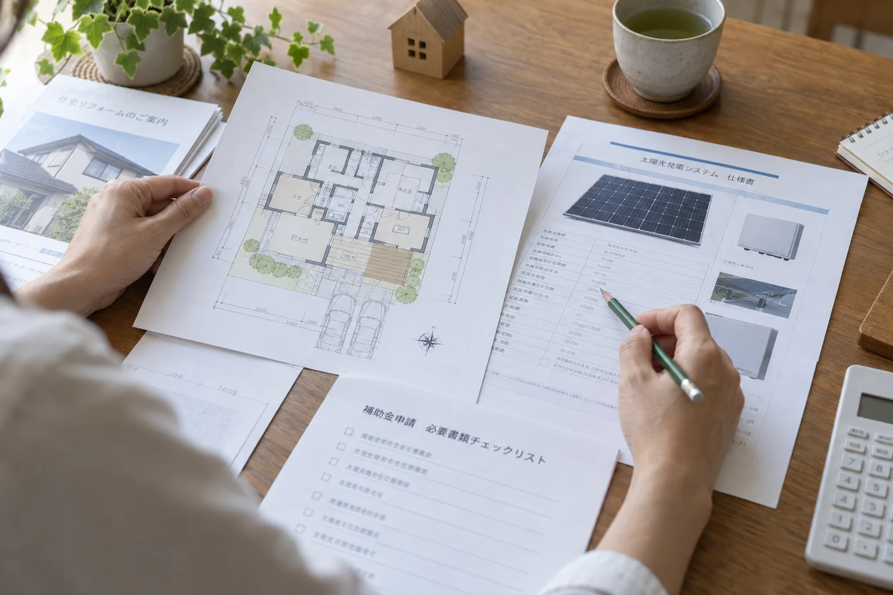

目次
自宅で使える補助金は，どう探す？
診断で参考情報を確認し，自治体などの公式情報を調べる
補助金を調べる入口として，はれトク診断を利用できます．診断結果の「補助金の内訳」で，入力条件に応じた参考情報を確認しましょう．
すべての制度を網羅した検索や，受給可否の確定ではありません．最新の募集状況・適用条件・正式な申請情報は，各自治体などの公式情報で確認してください．
診断の参考情報に加え，国・都道府県・市区町村の公式情報も調べましょう．環境省「住宅脱炭素NAVI」では，都道府県と市区町村を選ぶと，その地域の住宅向け支援をまとめて探せます．検索結果から各制度の公式ページへ進み，対象年度と募集要領を確認します（環境省，2026）．
自治体のサイトでは，「自治体名 太陽光 補助金 令和8年度」などで検索します．蓄電池も検討しているなら，設備名を変えて探しましょう．制度が見つかったら，制度名，公式URL，問い合わせ先を控えておくと，複数の候補を整理できます．
申請期限内でも，予算に達すると受付が終わることがある
締切日だけでなく，公式ページの受付状況と更新日を確認しましょう．例えば，神奈川県の2026年度住宅用太陽光発電・蓄電池導入費補助金の第2期募集案内には，予算額に達すると受付を終了すると記載されています．これは募集方法の例であり，現在も受付中であることを示すものではありません（神奈川県，2026）．
環境省の検索結果には，公募が終わった制度も残る場合があります（環境省，2026）．候補を見つけたときと申請直前に，実施主体の最新のお知らせを確認しましょう．受付状況が分からなければ，その制度の窓口へ問い合わせます．
候補が見つかったら，契約する前に，対象設備と申請時期を確かめましょう．
契約前に，何を確認する？

契約前には，候補制度が現在も受付中か，予算上限による終了・受付停止がないかを公式ページで再確認しましょう．詳しくは，受付状況の確認方法をご覧ください．
住宅と設備の条件を，募集要領に照らして確認する
対象になるかは，所在地，住宅の新築・既存の区分，所有・居住関係と，導入する設備の条件で確認します．太陽光のみ，同時に蓄電池を導入，既設の太陽光へ蓄電池を追加，では対象制度が異なる場合があります．募集要領では，FIT（固定価格買取制度）を利用できるか，発電した電気を自宅で使う割合に条件があるかも確認しましょう．
例えば，東京都の2026年度太陽光助成では，都内の住宅等に新設する未使用設備で，発電した電気を居住部分に使うことなどが条件です．既存システムへの増設は対象外です（東京都環境公社，2026a）．群馬県の2026年度制度も，設備の組み合わせ別に案内されています（同年度の交付申請受付は終了）（群馬県，2026）．
見積もりを依頼するときは，希望する設備構成と候補制度を伝え，型式や容量，電気の使い方が対象条件に合うかを確認しましょう．
補助額は，対象容量・費用の上限・併用条件で確かめる
補助額は，見出しの最大額だけで判断せず，自宅に当てはまる区分と対象容量で計算します．複数制度を使いたい場合は，両方の募集要領で併用の可否と経費上限を確認しましょう．
東京都の2026年度太陽光助成の例では，既存住宅で助成対象出力が3.75 kWを超える場合，単価は1 kW当たり12万円です．助成対象出力が4 kWなら，12万円／kW × 4 kW ＝ 48万円が計算例になります．ただし，助成対象経費が上限で，上乗せ助成は含みません（東京都環境公社，2026a）．
この制度の助成対象出力は，パネルとパワーコンディショナの出力のうち小さい方を基にします．都・公社の同種の助成金との重複受給もできません（東京都環境公社，2026a）．自宅の条件に合う補助額を見積もるときは，カタログに記載されたパネル容量をそのまま使わないようにしましょう．
受給前の補助額は見込みとして扱い，補助金を利用できる場合と，受け取れない場合の両方で自己負担を確認しましょう．
契約や着工の前に，必要な手続と通知を確認する
申請書を出しただけで，契約や工事を始めてよいとは限りません．利用する制度で，「契約」「発注」「着工」のどの前に，どの申請や通知が必要かを確認しましょう．
例えば，群馬県の2026年度制度では，県の交付決定前に契約・着工した場合は対象外です（交付申請受付は終了）（群馬県，2026）．一方，東京都の通常手続では，事前申込の受付通知日以降に契約へ進み，交付申請は工事・支払の後に行います（東京都環境公社，2026b）．
まだ契約していない人は，必要な申込・通知と契約・着工の予定日を照合し，不明点を制度窓口へ確認しましょう．
すでに契約した人は，契約日と着工状況を制度窓口へ伝え，対象になるか，必要な手続は何かを確認します．契約後でも補助金を受け取れるとは限りません．
申請から入金までは，どう進む？
申請・工事・報告の順番は，利用する制度に合わせる
手続の順番は全国共通ではありません．ここでは東京都の2026年度太陽光助成の通常手続を例に，申請の各段階で行うことを整理します（東京都環境公社，2026b）．
- 事前申込
見積書などを準備し，契約前に事前申込を行う．
- 受付通知の確認
事前申込の受付通知を確認する．
- 契約・工事・支払
受付通知日以降に契約し，工事と代金の支払を済ませる．
- 交付申請兼実績報告
交付申請兼実績報告を提出する．
- 交付決定通知・入金の確認
審査後の交付決定通知と，その後の入金を確認する．
この例の交付申請兼実績報告の期限は，事前申込受付日から1年以内と，2029年3月30日の早い方です．事前申込の受付だけでは受給は確定しません．工事代金の支払が助成金の入金より先になるため，入金までに必要な資金も確認しておきましょう（東京都環境公社，2026b）．
必要書類と提出期限を，工事前から整理する
工事後になってから書類を集め始めると，準備が間に合わないことがあります．利用する制度の公式チェックリストを使い，誰が，何を，いつまでに用意するかを施工会社と分担しましょう．写真が必要な場合は，撮影する時点と対象も先に確認します．
| 段階 | 準備するもの |
|---|---|
| 事前申込 | 見積書，個人情報の取扱いに関する同意書など |
| 工事後の申請・報告 | 契約書，設置完了後の写真，支払を示す金融機関発行の証明書など |
上の表は必要書類の一部です．申請者や工事内容によって追加書類があるため，手引きの別表1・2で自宅に必要なものを照合してください（東京都環境公社，2026b）．提出した書類の控えと受付番号を残し，申請・報告を出し終えた後も，通知と入金を確認できるようにしておきましょう．
施工会社には，何を頼める？
設備資料の準備と，申請支援の範囲を相談する
施工会社には，見積書の内訳，設備の型式・容量，工事予定日など，制度との照合に必要な情報を相談しましょう．候補制度の公式ページを共有しておくと，どの条件を確認したいかが伝わります．申請支援を頼む場合は，書類の準備・作成・提出のどこまで対応し，費用はいくらかを分けて確認します．
施工会社がすべての申請を代行できるとは限りません．群馬県の公式案内には，報酬を得て官公署への提出書類を作成する業務について，行政書士法上の注意が記されています（群馬県，2026）．作成や提出を依頼する場合は，制度が認める代行範囲と，実際の担当者・資格を確認しましょう．
期限・担当者・受給できない場合の負担を書面で確認する
候補制度の公式ページと，次の確認事項を施工会社に共有すると，相談を進めやすくなります．支援を頼む場合も，役割や条件は見積書や確認メールなどに残し，自分で確認できるようにしましょう．
- 利用する制度名と対象設備，見込む補助額の計算根拠
- 契約・着工前の手続と，申請・工事完了・実績報告の各期限
- 書類を用意する人，提出する人，期限と受付状況を確認する人
- 申請支援の費用と，見積額に含まれる範囲
- 不採択・減額・工事変更の場合の契約と自己負担の扱い
補助金を受け取れない場合の自己負担も確認したうえで，契約を判断しましょう．まず公式情報で候補と条件を確かめ，見積もりでは対象設備・工事費と申請支援を相談すると，導入後の負担を考えやすくなります．詳しくは，見積もりと契約前に確認することをご覧ください．